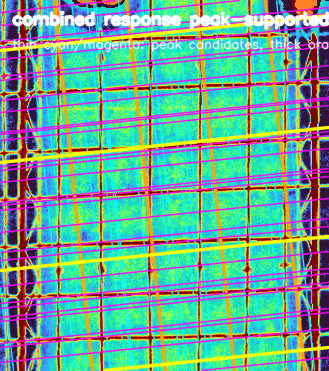
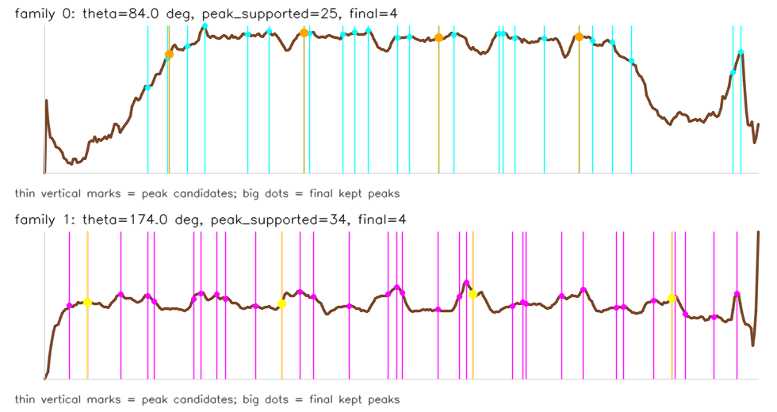

{
"generated_at": "2026-04-29 15:06:10",
"response_name": "combined_depth_ir_darkline",
"response_source": "depth_ir",
"line_stages": {
"initial": {
"family_0": [
-320.0,
-310.0,
-300.0,
-290.0,
-280.0,
-270.0,
-260.0,
-250.0,
-240.0,
-230.0,
-220.0,
-210.0,
-200.0,
-190.0,
-180.0,
-170.0,
-160.0,
-150.0,
-140.0,
-130.0,
-120.0,
-110.0,
-100.0,
-90.0,
-80.0,
-70.0,
-60.0,
-50.0,
-40.0,
-30.0,
-20.0,
-10.0,
0.0,
10.0,
20.0,
30.0
],
"family_1": [
-395.0,
-385.0,
-375.0,
-365.0,
-355.0,
-345.0,
-335.0,
-325.0,
-315.0,
-305.0,
-295.0,
-285.0,
-275.0,
-265.0,
-255.0,
-245.0,
-235.0,
-225.0,
-215.0,
-205.0,
-195.0,
-185.0,
-175.0,
-165.0,
-155.0,
-145.0,
-135.0,
-125.0,
-115.0,
-105.0,
-95.0,
-85.0,
-75.0,
-65.0,
-55.0,
-45.0,
-35.0,
-25.0,
-15.0,
-5.0
]
},
"peak_supported": {
"family_0": [
-274.0,
-264.0,
-254.0,
-245.0,
-223.0,
-212.0,
-194.0,
-191.0,
-174.0,
-168.0,
-161.0,
-146.0,
-140.0,
-125.0,
-117.0,
-94.0,
-92.0,
-86.0,
-71.0,
-53.0,
-46.0,
-36.0,
-26.0,
26.0,
30.0
],
"family_1": [
-389.0,
-379.0,
-360.0,
-345.0,
-341.0,
-319.0,
-315.0,
-306.0,
-301.0,
-284.0,
-269.0,
-259.0,
-251.0,
-231.0,
-209.0,
-204.0,
-201.0,
-181.0,
-169.0,
-165.0,
-161.0,
-139.0,
-133.0,
-131.0,
-111.0,
-99.0,
-80.0,
-76.0,
-59.0,
-49.0,
-47.0,
-41.0,
-25.0,
-12.0
]
},
"continuous": {
"family_0": [
-273.5610227584839,
-263.2621203660965,
-253.62668466567993,
-245.13451533019543,
-222.88517533242702,
-211.9252871274948,
-193.60403430461884,
-191.05855015665293,
-173.9786177892238,
-167.78188256919384,
-160.9828564953059,
-145.9043285921216,
-140.1035344824195,
-124.9845662266016,
-117.22032923996449,
-94.0081732943654,
-86.003426019568,
-70.74938955903053,
-53.28870114684105,
-46.185469418764114,
-36.02208277024329,
-26.04575390741229,
26.397541224956512,
29.477989852428436
],
"family_1": [
-378.88982459902763,
-359.7950786203146,
-344.84992039203644,
-340.8162523955107,
-318.904616817832,
-314.9652265496552,
-305.915091753006,
-301.3281552493572,
-284.0052307457663,
-268.97177199833095,
-258.82669898867607,
-251.11774930357933,
-230.82401806116104,
-208.6623873114586,
-204.2312187552452,
-201.37636071443558,
-181.24728302657604,
-168.55605667829514,
-164.93484620004892,
-160.85693776607513,
-138.85189677774906,
-132.77338798344135,
-111.10972601920366,
-98.63185036182404,
-80.01009011548012,
-75.94067101180553,
-59.16267701983452,
-49.38430753350258,
-46.84697523713112,
-40.82377099990845,
-24.606821715831757
]
},
"spacing_pruned": {
"family_0": [
-263.2621203660965,
-193.60403430461884,
-124.9845662266016,
-53.28870114684105
],
"family_1": [
-378.88982459902763,
-268.97177199833095,
-160.85693776607513,
-49.38430753350258
]
}
},
"line_summary": [
{
"family_index": 0,
"theta_deg": 84.0,
"peak_supported_count": 25,
"final_peak_count": 4,
"peak_rhos": [
-274.0,
-264.0,
-254.0,
-245.0,
-223.0,
-212.0,
-194.0,
-191.0,
-174.0,
-168.0,
-161.0,
-146.0,
-140.0,
-125.0,
-117.0,
-94.0,
-92.0,
-86.0,
-71.0,
-53.0,
-46.0,
-36.0,
-26.0,
26.0,
30.0
],
"final_rhos": [
-263.262,
-193.604,
-124.985,
-53.289
]
},
{
"family_index": 1,
"theta_deg": 174.0,
"peak_supported_count": 34,
"final_peak_count": 4,
"peak_rhos": [
-389.0,
-379.0,
-360.0,
-345.0,
-341.0,
-319.0,
-315.0,
-306.0,
-301.0,
-284.0,
-269.0,
-259.0,
-251.0,
-231.0,
-209.0,
-204.0,
-201.0,
-181.0,
-169.0,
-165.0,
-161.0,
-139.0,
-133.0,
-131.0,
-111.0,
-99.0,
-80.0,
-76.0,
-59.0,
-49.0,
-47.0,
-41.0,
-25.0,
-12.0
],
"final_rhos": [
-378.89,
-268.972,
-160.857,
-49.384
]
}
],
"point_count": 15
}